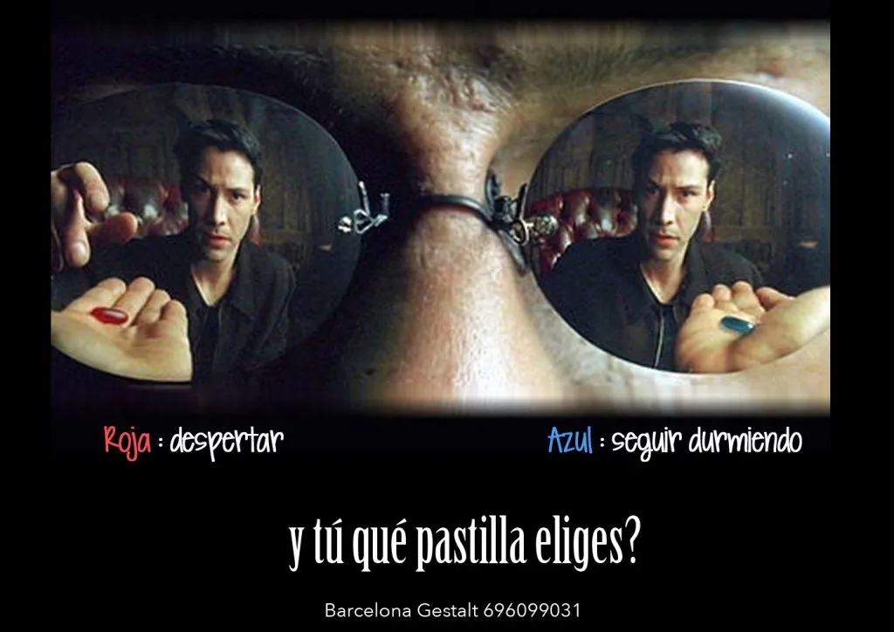

El desafío es:
¿Listos para explorar cómo la IA puede cambiar nuestras rutinas laborales?
Relevancia: Facilita la elaboración de TODO.
Impacto: Expande posibilidades a nuevas formas de contenidos educativos.
Oportunidades:
¿Qué es NotebookLM?: es una herramienta de Google basada en IA que te ayuda a organizar y entender información de tus documentos subidos. Funciona como un asistente de investigación, permitiéndote resumir, extraer información y responder preguntas sobre tus archivos. Es como tener un cuaderno de notas inteligente que aprende sobre tus documentos y puede ayudarte a encontrar información de manera más eficiente.
Antes definamos los pasos a seguir:
PASO 1: La receta (prompt): ¿Qué queremos hacer, cómo lo vamos a realizar y qué resultados esperamos?
PASO 2: Los ingredientes (fuentes): ¿Qué documentos necesitamos?
PASO 3: La Preparación (producción): Supervisada y con ajustes.
PASO 4: Plato final (salida): ¿Cómo la compartimos?
Pregunta para reflexionar:
¿Cuál es esa planificación, guía o actividad que siempre te lleva más tiempo o te resulta más difícil de diseñar?
¡Piensa cómo la IA podría ayudarte!
Espacio Abierto:
Recapitulando:
Recursos adicionales:
¡Gracias por venir! No tengas miedo de innovar.